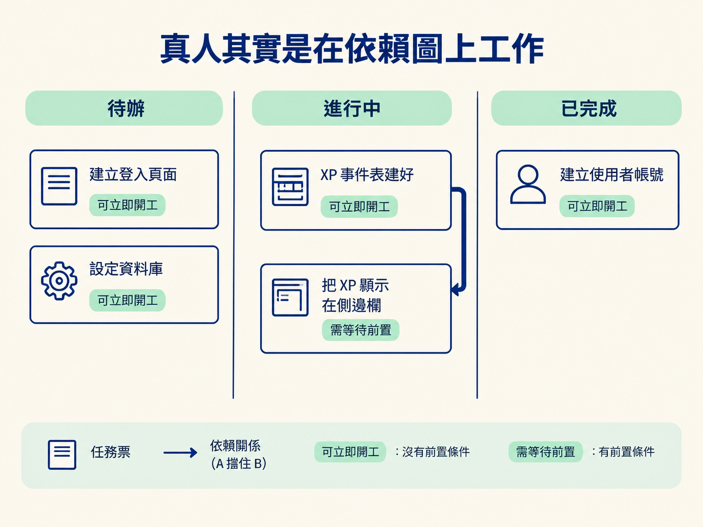
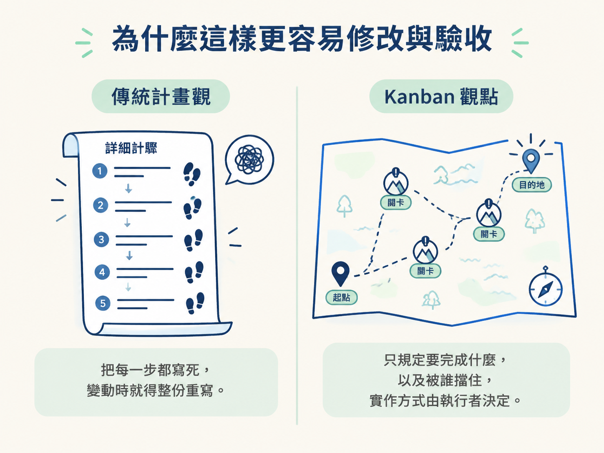
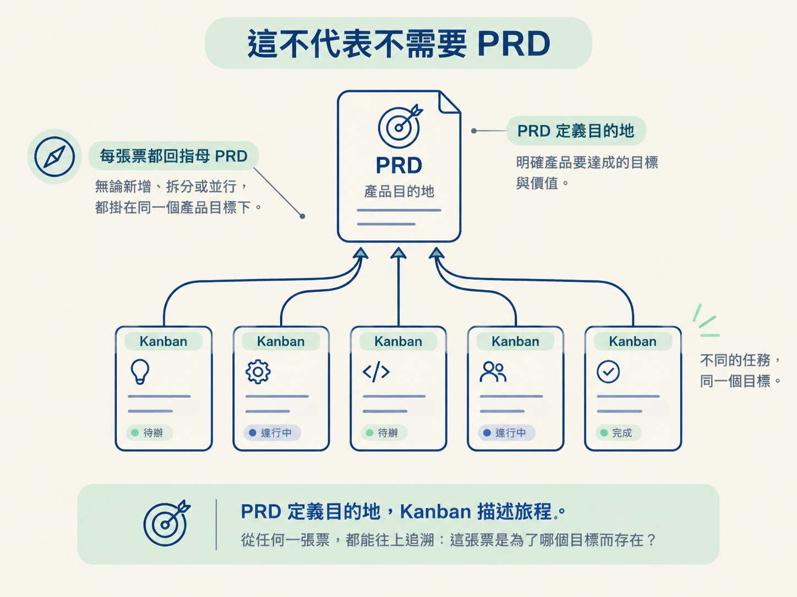

理解為什麼把 PRD 拆成一張帶有依賴關係的 issue 圖，會比一份多階段計畫更容易擴充、驗收，也能並行，更接近真人團隊實際協作的方式。
手上有一份 PRD，接下來最直覺的做法，通常是打開編輯器，寫下一份線性計畫：階段一做資料庫、階段二做 API、階段三做畫面。文件看起來很整齊，但真的照著執行時，卻常常有種卡住的感覺。
中途需求改了，你得回頭修改整份文件；QA 發現問題，你要重新思考這條回饋該塞進哪個階段；想找其他人一起做，又會發現各個階段綁得緊緊的，很難讓兩件事情同時做。
這種卡頓不只是文件不好用，問題出在我們把一種不太符合實際協作的工作方式套在 AI 身上。真人開發者理解目標後，很少把整條路寫成一份嚴謹的長文件。他們通常會開出一張張 issue，標記票與票之間「誰擋住誰」，再由團隊成員各自認領。
這一節要看的，就是把「多階段計畫」換成「一張有依賴關係的 issue 圖」後，工作方式會如何改變。
想像一個三人小組接到一項新功能。他們不會先寫出從階段一排到階段三的完整文件，而是把工作拆成一張張票，貼到 Kanban 板上。
有些票沒有前置條件，誰先拿到就可以先做；有些票則會被其他票擋住。例如，「把 XP 顯示在側邊欄」一定要等「XP 事件表建好」才能開始。把這些「A 擋住 B」的關係連起來，就是一張依賴圖。

這張圖有一個很實際的好處：工作可以同時開工。如果 A 和 B 都沒有被其他工作擋住，兩位開發者就能各自認領一張票，平行進行。等前面的工作完成，被卡在中間的票才會逐一解鎖。
相較之下，多階段計畫常常暗示「階段一全部做完，才能進入階段二」。原本可以並行的工作，就這樣被硬生生排成一條直線。
換個生活化的說法，多階段計畫像照著食譜從第一頁一路做到最後一頁，前一道菜沒完成，後面的步驟就不能碰；Kanban 板則像把便條紙攤在桌上，每張紙寫一件事，旁邊註明「這張要等哪幾張先完成」。誰有空，誰就拿一張來做。看起來可能比較不整齊，卻更接近真實廚房裡的工作方式。
依賴圖的價值，通常要等計畫開始長大後才會浮現。
假設執行到一半，突然想新增一個小功能。放在多階段計畫裡，你得先決定它應該塞進哪個階段，還要擔心它會不會打亂後面所有階段的描述。修改起來容易牽一髮動全身。
但在 Kanban 板上，你只需要新增一張票，再補上一條「這張票被誰擋住」的關係。其他票不必跟著重寫。
QA 回饋也是同樣的道理。當一張票完成後，驗收發現某個地方不理想，在多階段計畫裡，你得想辦法把這項回饋排進某個階段；在 Kanban 板上，則只要再開一張票。回饋不再打斷計畫，而是自然長進依賴圖裡的新工作。
| 面向 | 多階段計畫 | Kanban 依賴圖 |
|---|---|---|
| 形式 | 一份線性的長文件 | 一板標記「誰擋誰」關係的票 |
| 並行能力 | 階段之間被強制序列化 | 沒有被擋住的票可以同時開工 |
| 中途新增工作 | 需要回頭修改整份文件 | 新增一張票即可 |
| QA 回饋 | 需要想辦法排進某個階段 | QA 回饋本身就是一張新票 |
| 指涉強度 | 詳細規定每一步怎麼做 | 只規定要做什麼，以及被誰擋住 |
這張表最重要的對比，是「指涉強度」。多階段計畫很容易把每一步的做法寫死，彷彿計畫越詳細就越可靠；Kanban 則只交代「這張票要完成什麼」以及「它被哪張票擋住」，把實際做法留給執行的人或 agent。
文件一旦不再干涉實作細節，需求變動時就不必整份重寫。它比較像一張地圖，標出目的地與必須跨越的關卡，而不是把每一步腳印都預先畫死。

看到這裡，可能會產生一個誤解：既然要用票來工作，是不是連 PRD 都不需要了？剛好相反。
PRD 和 Kanban 負責的是不同層次的事情。PRD 回答的是目的地：我們到底要去哪裡？Kanban 描述的則是旅程：從現在到目的地，要經過哪些票，以及這些票彼此如何牽制。
所以正確的組合不是「用 Kanban 取代計畫文件」，而是「PRD 定義目的地，Kanban 描述旅程」。每一張票都應該回頭指涉它所屬的母 PRD。這樣一來，無論你正在查看哪一張票，都能往上追溯：「這張票是為了哪個目標而存在？」

有了可追溯性，Kanban 就不會變成一堆散亂的便利貼。票可以自由新增、拆分與並行，但每張票仍然掛在同一個產品目標之下。
多階段計畫把旅程寫成一份線性文件，容易讓工作彼此綁死；真人團隊則更常在一張帶有依賴關係的 issue 圖上工作。Kanban 更容易擴充、並行與驗收，因為新增工作和 QA 回饋都只需要再開一張票。PRD 沒有消失：它負責定義目的地，Kanban 負責描述旅程。
知道「要建立一張有依賴關係的票板」之後，下一個問題就是：這張板要怎麼從一份 PRD 生出來？下一節會實際執行 PRD-to-issues skill，看看它如何把 PRD 切成一片片垂直切片，標記哪些工作需要 HITL、哪些可以 AFK，最後再自動留下 QA 單。